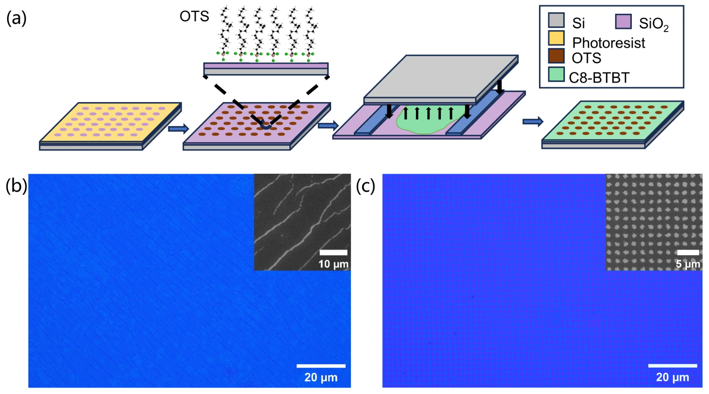

首页
研究方向
团队成员
科研成果
团队建设
联系我们
低维信息功能材料与器件
紫磷晶体结构 · Chen et al. · Nano Letters · 2023
进入方向 01 · 查看相关论文
智能感知材料与传感器件

多孔有机单晶制备 · Chen et al. · Nano Research · 2025
进入方向 02 · 查看相关论文
光电融合神经形态材料与器件
Xiong et al. · Chemical Engineering Journal · 2026 · 原论文 Fig. 1
进入方向 03 · 查看相关论文
类脑芯片设计与智能系统
Liu et al. · Nature Communications · 2023 · 原论文 Fig. 3
进入方向 04 · 查看相关论文